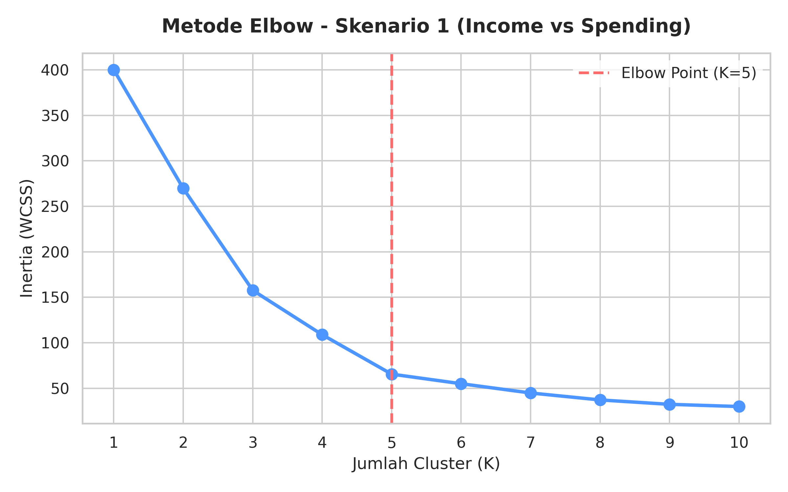
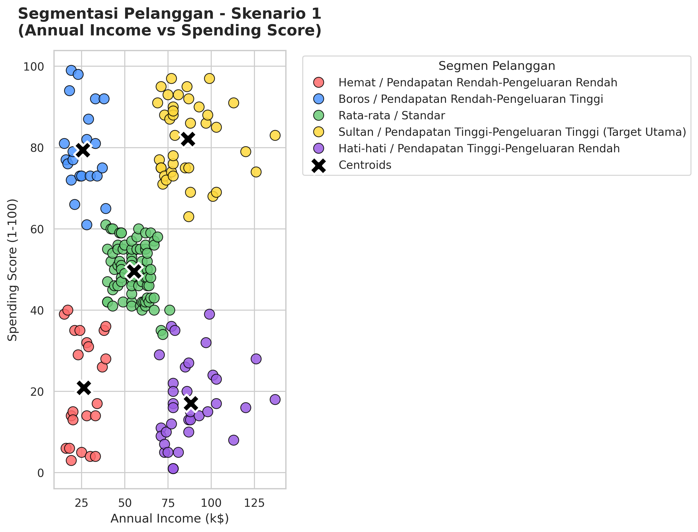
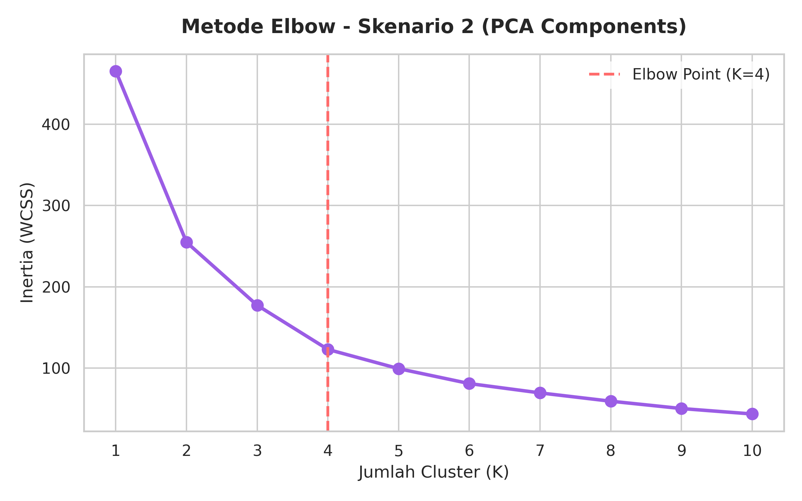
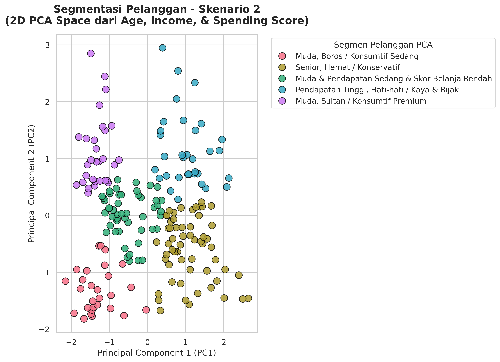

Prediksi Segmen Pelanggan
Masukkan profil pelanggan di bawah ini untuk melihat klasifikasi segmen secara instan.
Siap Menganalisis
Geser nilai parameter dan klik tombol "Analisis & Prediksi" untuk melihat segmentasi dan saran strategi pemasaran.
Karakteristik Segmen
Penentuan K Optimal (Elbow)

Grafik WCSS (inertia) vs K. Penurunan melambat tajam pada K=5, menunjukkan 5 klaster adalah representasi terbaik.
Sebaran Klaster & Centroid

Plot sebaran pelanggan dalam 5 kelompok utama. Simbol 'X' hitam mewakili titik tengah (centroid) masing-masing kelompok.
Penentuan K Optimal (Elbow PCA)

Metode Elbow diterapkan pada 2 Principal Components (PC1 & PC2). Titik siku (elbow) optimal dideteksi pada K=4.
Proyeksi 2D PCA & Hasil Klaster

Pelanggan diproyeksikan ke dalam ruang 2D PCA yang menjelaskan 77.57% variabilitas data dari gabungan Umur, Pendapatan, dan Pengeluaran.
Panduan Strategi Kampanye Terarah
Berdasarkan pengelompokan demografis dan transaksi, berikut adalah pembagian fokus kampanye iklan dan promo untuk setiap profil:
Target Utama (Pendapatan & Pengeluaran Tinggi)
Pelanggan dengan daya beli tinggi yang sangat aktif berbelanja. Fokus pada penawaran bernilai tinggi.
- Saluran Pemasaran: Email personal VIP, WhatsApp eksklusif, Undangan event tertutup.
- Jenis Promo: Akses awal produk edisi terbatas (early-access), layanan premium tanpa biaya tambahan, concierge belanja.
Pendapatan Tinggi, Hemat Pengeluaran
Pelanggan dengan uang berlebih tetapi sangat selektif dalam membelanjakannya. Menghargai nilai jangka panjang produk.
- Saluran Pemasaran: Iklan edukatif tentang keandalan produk, ulasan/testimoni ahli.
- Jenis Promo: Paket garansi panjang, promosi "value-for-money", cashback atau program tabungan loyalitas.
Pendapatan Rendah, Pengeluaran Tinggi
Kelompok berusia lebih muda yang sangat responsif terhadap tren visual, tren sosial, dan diskon instan.
- Saluran Pemasaran: Iklan visual Instagram/TikTok, KOL/Influencer marketing.
- Jenis Promo: Flash Sale berbatas waktu, voucher diskon instan 50%, bundling produk murah kekinian.
Pendapatan Rendah, Pengeluaran Rendah
Pelanggan yang sangat sensitif terhadap harga dan memiliki anggaran belanja minim.
- Saluran Pemasaran: Banner fisik diskon di toko, kupon kertas, SMS blast hemat.
- Jenis Promo: Beli 1 gratis 1 (BOGO), diskon kebutuhan pokok dasar, produk clearance sale dengan harga murah.